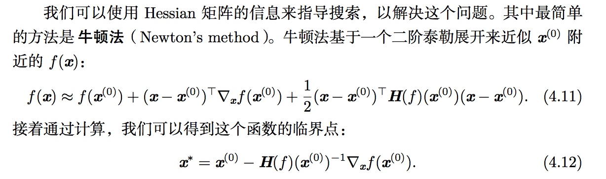

第四章 数值计算
1.数值精度
这部分对于了解具体的算法并没影响，但是在进行底层库开发时候经常会遇到，可能会出现上溢或者下溢
（1）病态条件
条件数：表示函数相对于输入的微小变化而变化的快慢程度。
比如矩阵求逆运算的条件数=最大和最小特征值的模的比
2.优化算法
- 梯度下降
- 牛顿法
一般把需要最优化的函数称为目标函数
梯度下降
对于一个多维输入函数f，梯度\(\triangledown_x f(x)\),其在u方向上的方向导数，相当于f在u方向上的斜率
\(f(x+\alpha u)\)关于\(\alpha\)的导数(在\(\alpha =0\)时取得)
\[\frac{\partial}{\partial \alpha}f(x+\alpha u)=u^T\triangledown_x f(x)\]
为了是f最小，希望找到f下降最快的方向，因此有
\[min u^T\triangledown_x f(x)\]
u取为单位向量，很明显是在u和f夹角180时候，也就是两个完全相反的时候，下降最快。
梯度下降： \(x'=x-\epsilon \triangledown_x f(x)\)
牛顿法
Hessian矩阵，二阶导数

3.有限制的约束
对于有限制的优化，有时候可以将约束条件转化到原始的优化函数中，这里主要介绍一下通用的方法：KKT方法(拉格朗日方法的推广，可以非等式约束)
@@@
http://blog.csdn.net/mr_kktian/article/details/53750424
参考资料
梯度下降法 扩展阅读： https://www.jiqizhixin.com/articles/2016-11-21-4
http://www.cnblogs.com/maybe2030/p/4751804.html
Copyright © 2015 Powered by MWeb, Theme used GitHub CSS.